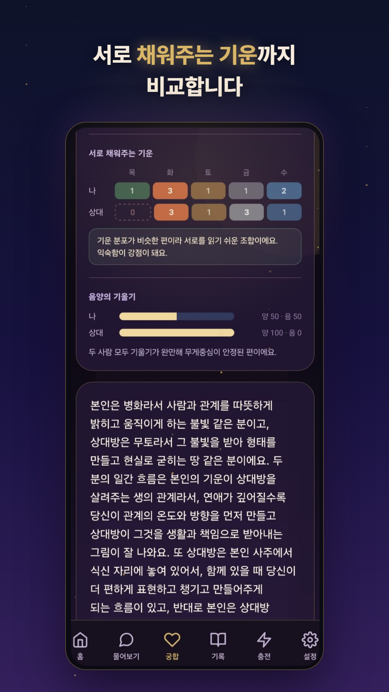

궁합 하면 "몇 점짜리 궁합"부터 떠올리기 쉽지만, 명리에서 보는 궁합은 점수 매기기가 아니에요. 두 사람의 사주를 나란히 놓고, 기운이 만나는 방식을 읽는 것에 가깝습니다.
핵심 개념 두 가지만 알면 궁합 풀이가 훨씬 잘 들립니다. 바로 합과 충이에요.
합은 두 글자가 서로 끌어당겨 묶이는 관계예요. 두 사람의 사주에 합이 있으면 만나자마자 마음이 붙고, 같은 미래를 그리기 쉬운 사이로 봅니다. 특히 각자의 일지, 그러니까 생활 자리끼리 합이 되면 함께 있는 일상이 편안하다고 풀이해요.
충은 반대로 부딪히는 관계입니다. 그런데 충이 있다고 나쁜 궁합이라 단정하면 곤란해요. 충은 서로 다른 속도와 리듬을 뜻하는 경우가 많아서, 차이를 인정하면 오히려 서로를 보완하는 관계가 되기도 합니다. 실제로 오래 가는 커플 중에 충 하나쯤 있는 경우가 적지 않아요.

여기에 서로의 오행이 무엇을 채워주는지, 한 사람의 기운이 상대를 살려주는 흐름인지까지 보면 두 사람의 그림이 꽤 입체적으로 보입니다.

좋은 궁합 풀이는 "잘 맞아요, 안 맞아요"로 끝나지 않고 어디서 붙고 어디서 부딪히는지를 보여줘야 해요. 소곤사주의 궁합은 상대방 생년월일만 입력하면 두 사주를 나란히 놓고 합과 충, 오행 흐름을 근거 화면으로 직접 보여줍니다. 연애와 결혼뿐 아니라 동업이나 가족 관계 궁합도 볼 수 있어요.
우리 둘의 사주 나란히 보기